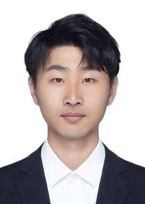

Yuntao Du杜云涛Associate Researcher
Joint SDU-NTU Centre for Artificial Intelligence Research & School of Software |
 |
Currently, I am working as an Associate Researcher in the School of Software, at Shandong University. Before that, I was a research scientist at the Beijing Institute for General Artificial Intelligence (BIGAI). I got a Ph.D degree from Nanjing University in June 2023. I was a member of
IIP Group,
led by professor
Chongjun Wang. Before that, I received my B.Sc. degree from Northeastern University in June 2018.
I am working on multimodal understanding, reasoning, and new knowledge learning. In particular, I'm interested in building models/agents that can generalize well and learn continously in various reasoning and multimodal tasks. Some of my research topic could be found below:
2025.02 I have joined Shandong University as an Associate Researcher in the School of Software.
When Large Multimodal Models Confront Evolving Knowledge: Challenges and Pathways. [PDF]
Kailin Jiang*, Yuntao Du*, Yukai Ding, Yuchen Ren, Ning Jiang, Zhi Gao, Zilong Zheng, Lei Liu, Bin Li, Qing Li.Parameter-Efficient Fine-Tuning for Pre-Trained Vision Models: A Survey. [PDF]
Yi Xin, Siqi Luo, Haodi Zhou, Junlong Du, Xiaohong Liu, Yue Fan, Qing Li, Yuntao Du*
Test-Time Selective Adaptation for Uni-Modal Distribution Shift in Multi-Modal Data. [PDF]
MingCai Chen, Baoming Zhang, Zongbo Han, Yuntao Du*, Wenyu Jiang, Yanmeng Wang, Shuai Feng, Bingkun BAO
ICML 2025 (Equal Corresponding Author)
MMKE-Bench: A Multimodal Editing Benchmark for Diverse Visual Knowledge. [PDF] [WebPage]
Yuntao Du, Kailin Jiang, Zhi Gao, Chenrui Shi, Zilong Zheng, Siyuan Qi, Qing Li
ICLR 2025
Robust Logit Adjustment for Learning with Long-Tailed Noisy Data. [PDF]
MingCai Chen, Yuntao Du, Wenyu Jiang, Baoming Zhang, Shuai Feng, Yi Xin, Chongjun Wang
AAAI 2025
V-PETL Bench: A Unified Visual Parameter-Efficient Transfer Learning Benchmark. [PDF] [WebPage]
Yi Xin*, Siqi Luo*, Xuyang Liu*, Yuntao Du*, Haodi Zhou, Xinyu Cheng, Christina Luoluo Lee, Junlong Du, Haozhe Wang, MingCai Chen, Ting Liu, Guimin Hu, Zhongwei Wan, Rongchao Zhang, Aoxue Li, Mingyang Yi, Xiaohong Liu
NeurIPS 2024
VideoAgent: A Memory-augmented Multimodal Agent for Video Understanding. [PDF] [WebPage] [机器之心中文报道]
Yue Fan, Xiaojian Ma, Rujie Wu, Yuntao Du, Jiaqi Li, Zhi Gao, Qing Li
ECCV 2024
Multi-source Fully Test-Time Adaptation. [PDF]
Yuntao Du, Siqi Luo, Yi Xin, MingCai Chen, Shuai Feng, Mujie Zhang, Chongjun Wang
Neural Network 2024
CLOVA: A Closed-LOop Visual Assistant with Tool Usage and Update. [PDF] [WebPage]
Zhi Gao, Yuntao Du, Xintong Zhang, Xiaojian Ma, Wenjuan Han, Song-Chun Zhu, Qing Li
CVPR 2024
Generation, augmentation, and alignment: A pseudo-source domain based method for source-free domain adaptation [PDF]
Yuntao Du, Haiyang Yang, Mingcai Chen, Juan Jiang, Hongtao Luo, and Chongjun Wang.
Machine Learning (MLJ) 2023
DSCR: Dual View based Symmetric Consistency Regularization for Semi-Supervised Domain Adaptation [PDF]
Yuntao Du, Juan Jiang, Hongtao Luo, Haiyang Yang, Mingcai Chen, and Chongjun Wang.
Transactions on Machine Learning Research (TMLR) 2023
Two Wrongs Don’t Make a Right: Combating Confirmation Bias in Learning with Label Noise [PDF]
Mingcai Chen, Hao Cheng, Yuntao Du , Ming Xu, Wenyu Jiang, Chongjun Wang
AAAI 2023
InCo: Intermediate Prototype Contrast for Unsupervised Domain Adaptation [PDF]
Yuntao Du*, Hongtao Luo*, Haiyang Yang, Juan Jiang, and Chongjun Wang
ECML-PKDD 2022
Semi-Supervised Learning with Multi-Head Co-Training [PDF] [Code]
Mingcai Chen, Yuntao Du , Yi zhang, Shuwei Qian, and Chongjun Wang
AAAI 2022
AdaRNN: Adaptive Learning and Forecasting of Time Series [PDF] [Code](引用超290)
Yuntao Du , Jindong Wang, Wenjie Feng, Sinno Pan, Tao Qin, Renjun Xu and Chongjun Wang
CIKM 2021
Adversarial Separation Network for Cross-Network Node Classification [PDF] [Code]
Xiaowen Zhang *, Yuntao Du *, Rongbiao Xie and Chongjun Wang (*, euqal contribution)
CIKM 2021
Homogeneous Online Transfer Learning with Online Distribution Discrepancy Minimization [PDF] [Code]
Yuntao Du, Zhiwen Tan, Qian Chen, Yi Zhang, Chongjun Wang.
ECAI 2020
Journal Reviewer
IEEE Transactions on Neural Networks and Learning Systems (TNNLS)
Transactions on Machine Learning Research (TMLR)
Knowledge-Based Systems
Conference Reviewer
The Thirty-Ninth Conference on Neural Information Processing Systems (NeurIPS) 2024
International Conference on Learning Representations (ICLR) 2024
IEEE International Conference on Computer Vision (ICCV) 2023, 2021
European Conference on Computer Vision (ECCV) 2024, 2022
IEEE Conference on Computer Vision and Pattern Recognition (CVPR) 2022, 2023
AAAI Conference on Artificial Intelligence (AAAI) 2022, 2023, 2024
ACM International Conference on Multimedia (ACM MM) 2021, 2023